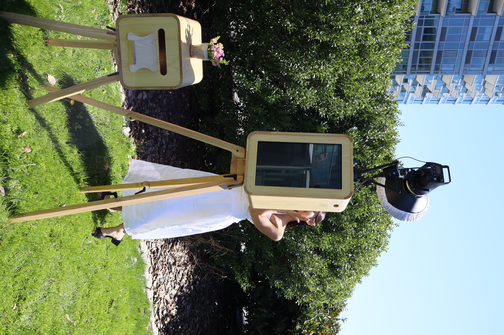

Our Story
tinydisco simply means “a tiny party within the party”, a small photobooth space where guests can step in, have fun, and let loose. With disco culture deeply tied to New York City, the inspiration behind the brand felt right at home here. We are an AAPI, woman-founded business serving New York City and Long Island.
From intimate weddings to large-scale corporate activations, we bring the same obsessive attention to detail to every event. Our booth isn't just a photo booth — it's the centerpiece of your night.
